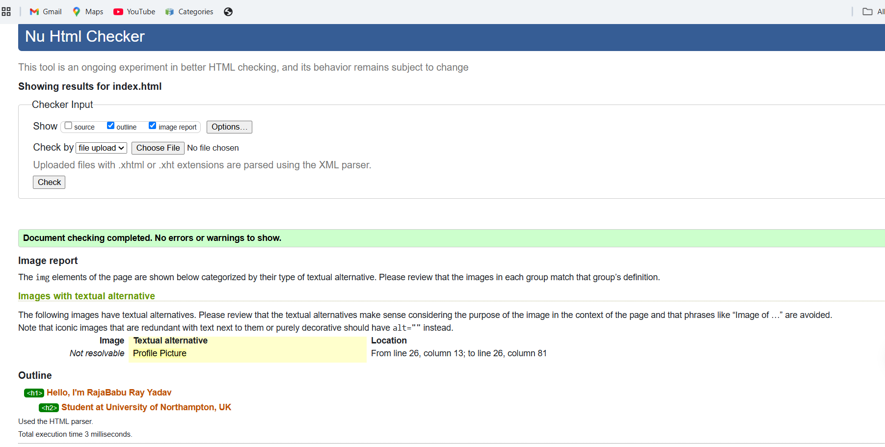
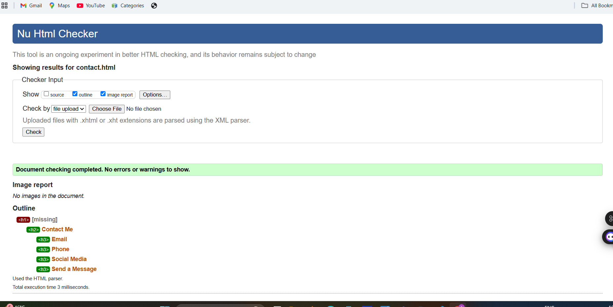
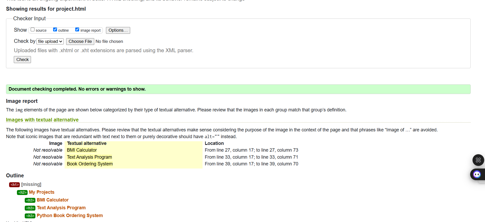
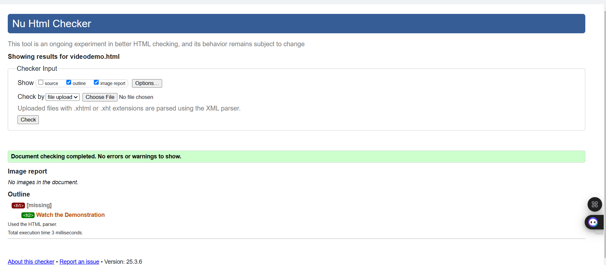
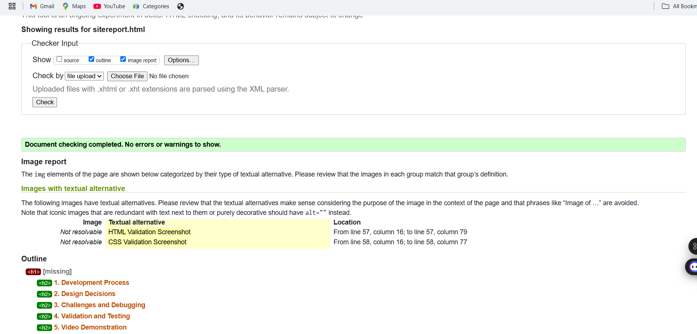

Development Experience
This portfolio project has been an enriching experience, allowing me to apply core web development concepts. I started by structuring the website using semantic HTML elements, ensuring proper organization and accessibility. Learning CSS for styling and responsiveness was an exciting challenge, as I experimented with layout techniques like Flexbox and Grid.
During the process, I encountered difficulties in structuring the navigation bar and ensuring it adapted correctly on different devices. Additionally, debugging CSS conflicts was a time-consuming task, but with practice, I improved my problem-solving skills. Through iteration and testing, I enhanced the website’s visual appeal and user experience.
Design Decisions
For the design, I opted for a modern, minimalistic style with a sans-serif font to enhance readability. I selected a color scheme that balanced professionalism and creativity, taking inspiration from design platforms such as Behance and Dribbble.
Flexbox and Grid were used to structure content, allowing for a clean and adaptable layout. I also incorporated hover effects and smooth transitions to improve user interaction. Consistency was maintained across all pages by using a shared stylesheet, ensuring a seamless browsing experience.
Challenges and Solutions
One of the primary challenges I faced was ensuring proper responsiveness across devices. Initially, the layout did not adjust well on smaller screens. I resolved this by implementing media queries and testing the website on multiple devices.
Another challenge was ensuring cross-browser compatibility. Some CSS properties rendered differently on different browsers. To address this, I referenced MDN Web Docs and made adjustments to ensure consistent behavior across Chrome, Firefox, and Edge.
Additionally, validating my code through W3C validators helped me identify and correct minor syntax errors, leading to a cleaner and more optimized website.
4. Validation and Testing
All HTML and CSS files were validated using W3C validators. The results confirmed compliance with web standards:






Video Demonstration
The project demonstration video showcases the functionality and design choices of my website. Watch it here: Project Video